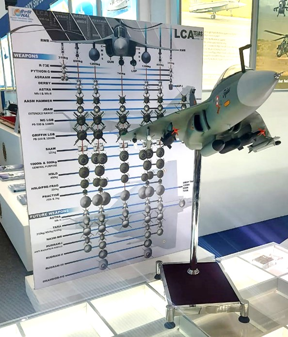
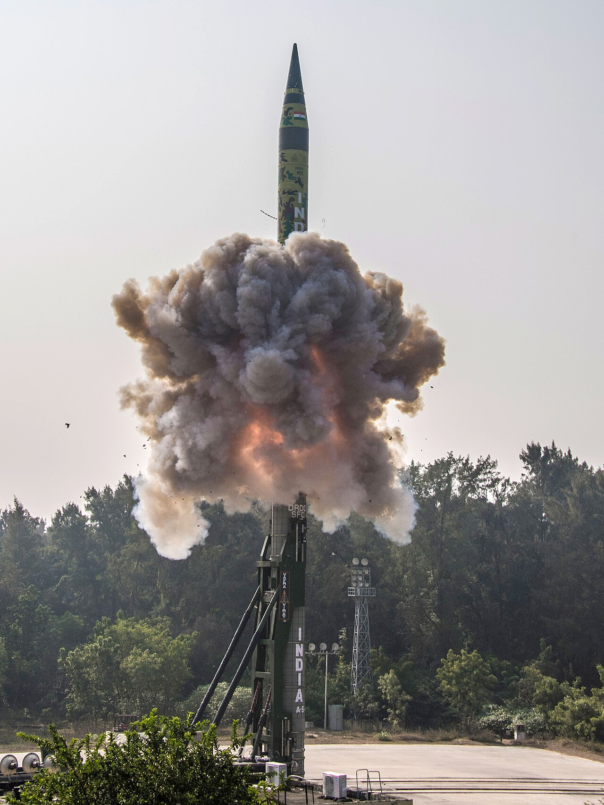

Geopolitics · Technology
The Chip War: and India's Semiconductor Ambitions

The most valuable commodity of the 21st century is not oil or gold but the tiny silicon chip. Semiconductors power everything from phones to fighter jets — and control over them has become the central battleground of great-power rivalry.
The new oil
A handful of companies and territories — above all Taiwan — make the world's most advanced chips. This concentration turns a manufacturing detail into a geopolitical pressure point: whoever controls chips shapes the future of computing, AI and weapons.[1]
Whoever controls chips shapes the future of computing, AI, and war.
The US–China contest

Washington has restricted China's access to advanced chips and the machines that make them; Beijing races to build its own. The Taiwan Strait sits at the heart of the standoff, because most cutting-edge fabrication happens there.
India's opening
India sees a chance to become a trusted node in a supply chain the world wants to diversify. Through its Semiconductor Mission and large subsidies, it is courting fabrication and assembly plants — aiming to move from chip consumer to chip maker.
The hard road
Building a chip industry is brutally difficult: it demands water, power, talent and patience measured in decades. India's advantages are design talent and market size; its challenges are infrastructure and the sheer cost of catching up.
Why it matters
For India, chips are about strategic autonomy in the digital age — and a hedge against being squeezed in a contest between giants. The nation that helped write the world's software now wants to help build its hardware.
Sources & further reading
- "Semiconductor industry," Wikipedia.
All images via Wikimedia Commons, used under the licences shown on each file page.